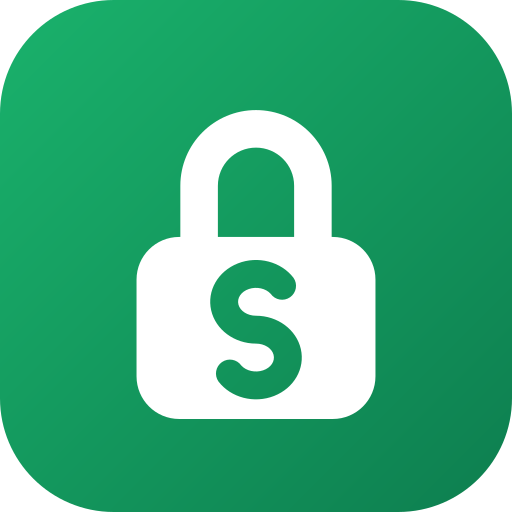
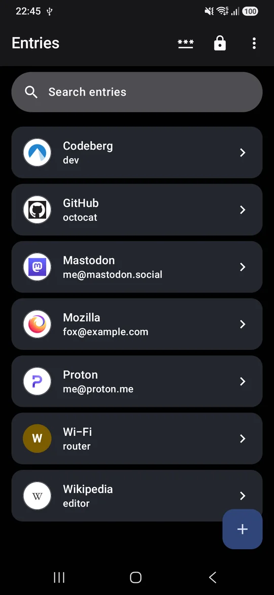

Snaplock
A KeePass password manager that feels like part of Android. Autofill, passkeys and 2FA codes on a vault that is simply an encrypted file you own: keep it on the phone or sync it with anything, and open it with KeePassXC on your computer.
- Android 7.0 or later
- KeePass KDBX 3 and 4
- GPL-3.0 licensed

Why
Most password managers keep your vault on their servers. KeePass keeps it in one encrypted file that you control, and many apps on every platform can open it. Snaplock brings that file to Android without giving up what makes the big managers convenient: sign-in suggestions in the keyboard, passkeys in the system sheet, and changes from your other devices merged in instead of overwritten.
Features
Everything a password manager needs, on a file you own.
-
Autofill
Logins suggested in the keyboard in apps and browsers, 2FA codes filled after the password, and new logins offered to save.
-
Passkeys
Create and use passkeys from the Android 14+ sign-in sheet. They are stored the way KeePassXC stores them, so its browser extension can use them too.
-
Safe with sync
Edited the vault on another device through Syncthing or a cloud drive? Snaplock merges those changes before it saves, the way KeePass does.
-
The whole KeePass vault
Groups, custom fields, attachments, entry history, a recycle bin and key files.
-
2FA codes
TOTP and Steam Guard codes, added from a QR code or a setup key.
-
Generator
Passwords and passphrases from the EFF wordlist, with a strength meter.
-
Password health
Finds weak, reused, old and expired passwords on the device, and can check them against known breaches if you turn that on.
-
Daily backups
A copy of the encrypted vault from before each day's first save, kept for a week.
-
Your choice of encryption
AES-256, ChaCha20 or Twofish with Argon2 or AES-KDF, plus a benchmark that sets unlocking to about a second on your phone.
-
Import and export
Bring logins in from Bitwarden, Chrome, Firefox, 1Password, Proton Pass, LastPass or KeePassXC, and export them as CSV.
-
Part of Android
Material You, a Quick Settings tile to lock the vault, launcher shortcuts, and the list and entry side by side on tablets and foldables.
-
No account, no tracking
No servers, analytics or ads. The two online features, the breach check and site icons, stay off until you turn them on.
Install
Android 7.0 or later. Passkeys need Android 14.
GitHub
Download the signed APK from the latest release and open it on your phone. Every release is built reproducibly from its tag, so anyone can rebuild it from source and get the same file.
Latest releaseF-Droid
Snaplock is in review for F-Droid. F-Droid will ship the same signed APK, so you can switch between the two later without reinstalling.
To check that a copy is genuine, compare its signing certificate:
apksigner verify --print-certs snaplock.apk
The certificate SHA-256 must be
e66b0d23e679d1d606573be6f705630f9f90e74be084ec4b59d1181ae608b8b7.
Privacy
Your vault never leaves the file you chose, and Snaplock has no account or server. The decrypted vault lives only in memory and is dropped when it locks. If you turn on the breach check, only the first 5 characters of each password's SHA-1 hash are sent to Have I Been Pwned; if you download site icons, each website is asked for its own icon.